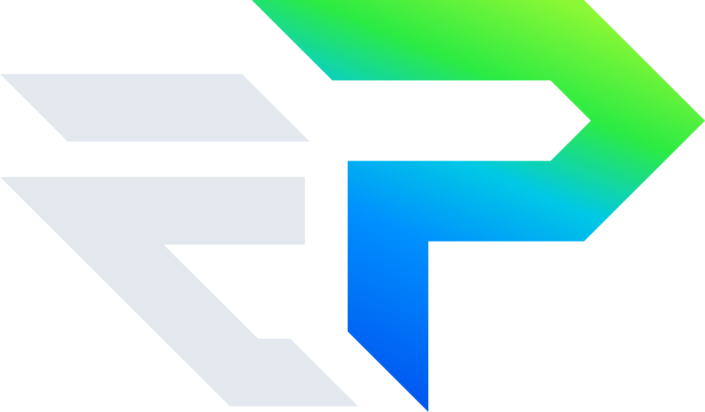

ENTRETENIMENTO · JOGOS · CASA

OwnTVPersonalize sua central.
Escolha um item e use ← ou → para movê-lo. OK conclui.
Desenvolvido por Elizandro Pacheco
elizandropacheco.io
Siga @ElizandroPacheco no Instagram e inscreva-se no YouTube.
Apoie
o projeto com uma estrela no GitHub.
webOS 0.2.0
Notícias por temas, vídeos públicos de canais
escolhidos e câmeras por ponte privada. O botão Home continua
abrindo a tela da LG.
Manchete publicada pela fonte indicada. Para ler a reportagem completa, consulte o veículo.